| 日付 | 2010年5月22日（土） |
|---|---|
| 山域 | 安蘇山塊 |
| メンバー | 友人（男1女1） |
| 山行形態 | 日帰り |
| アクセス | 電車、バス、ロープウェイ |
| ルート (Map) | 明智平→茶ノ木平→薬師岳→夕日岳→地蔵岳→古峰原神社 |
今週末は1泊2日でアカヤシオで有名な袈裟丸山へ
3名で行く予定をしていたが、日曜は雨予報。
昨年に引き続き今年も袈裟丸山は中止とする。
せめて土曜日だけでも山へ行こうと思い
日光の薬師岳～夕日岳～地蔵岳縦走コースを歩くことにする。
こちらもツツジの花で有名なコースだ。
いろは坂の途中にある明智平に到着。今まで何度かここを通過してきたが、
ここでバスを降りるのは初めてだ。
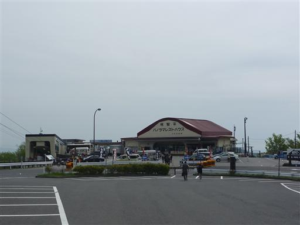
ここからは展望台までロープウェイが伸びている。関東一短いロープウェイらしい。
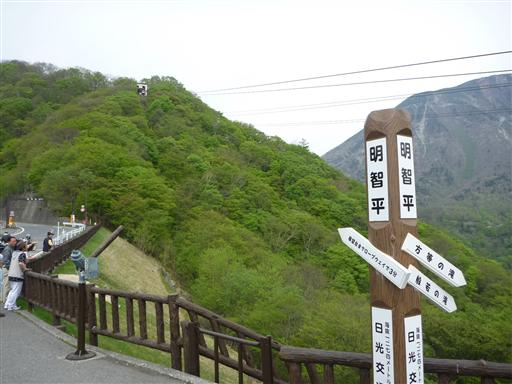
ここは既に標高1274m。眼下には第1いろは坂が見えている。
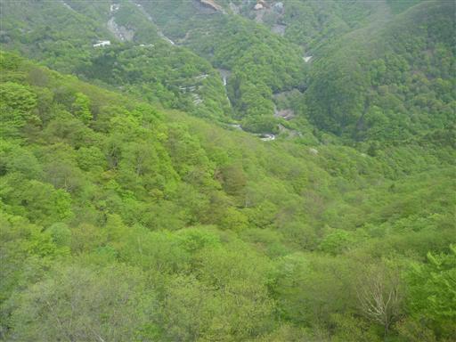
ロープウェイはたったの2分30秒で展望台に到着する。
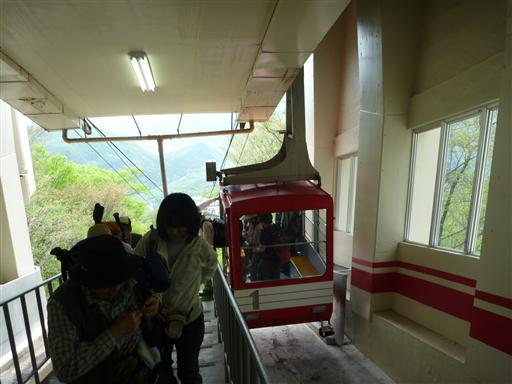
登山前に明智平展望台に登ってみる。
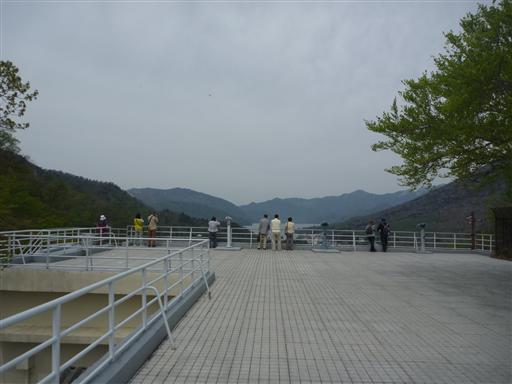
目の前に中禅寺湖と華厳の滝が現れる。
わざわざロープウェイを作るだけのことはある、素晴らしい展望台だ。
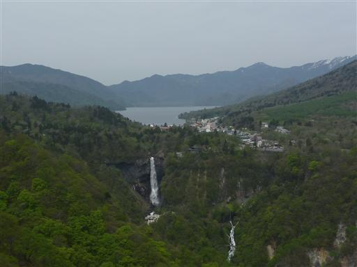
中禅寺湖のすぐそばには大きな男体山が聳えている。もう雪はほとんど無さそうだ。
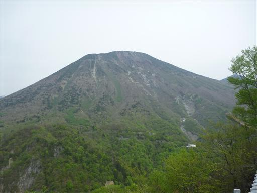
男体山から伸びる尾根に連なる岩壁は屏風岩だ。
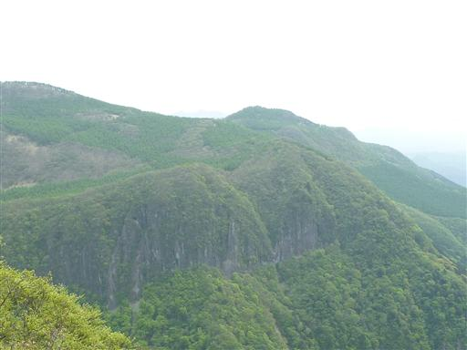
9:23 展望台の脇からひっそりと伸びる登山道に入っていく。
歩く人などいないと思っていたが、思ったよりも人通りはある。
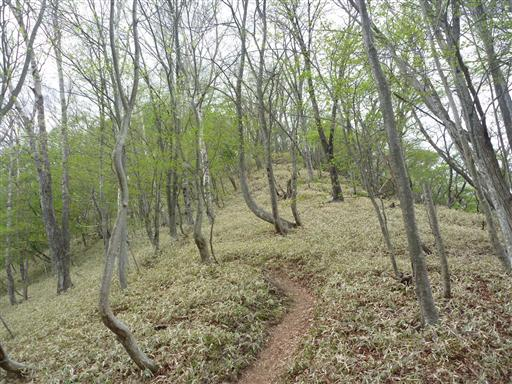
早速、登山道にツツジの花が現れる。ミツバツツジとシロヤシオだ。
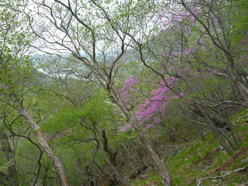
展望が開けると男体山の斜面の向こうに日光白根山の頭が見えてくる。
こちらはまだ雪が沢山残ってそうだ。
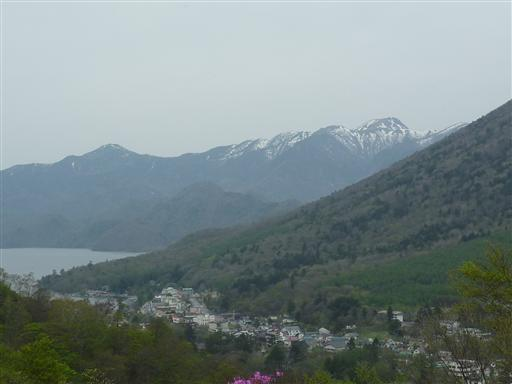
アカヤシオの花も咲いている。他のツツジに比べると花期の早い花だが、
まだ若干の花が残っている。

茶ノ木平に到着。平らな地形に笹原が広がる。
ここから中禅寺湖に出る道、中禅寺湖の南岸尾根、薬師岳方面に向かう道が分かれる。
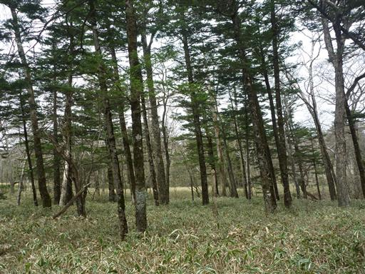
茶ノ木平で少し行き過ぎてしまったため、薬師岳への分岐点まで戻ってくる。
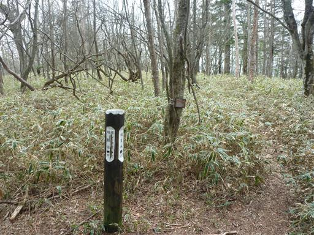
こちらの道はあまり歩く人がいなさそうで、登山道は丈の低い笹に覆われている。
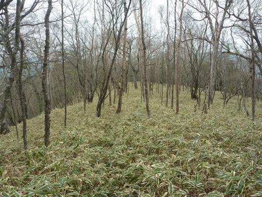
篭石に到着。2体の石仏が置かれている。古いものなのか、損傷が激しい。
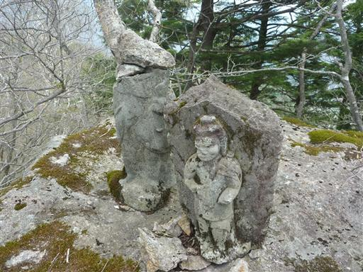
この辺りはツツジが特に多く、どこを見渡してもツツジが花を咲かせている。
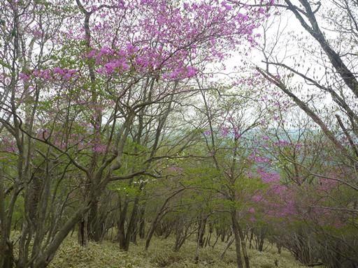
送電線鉄塔。叩けばこけそうな貧弱なつくりだ。
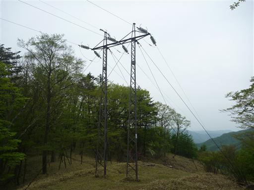
ミツバツツジにシロヤシオ。赤と白の共演だ。
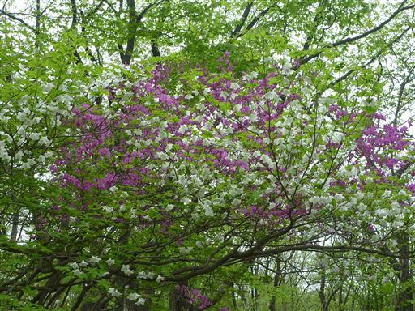
シロヤシオは5枚の葉があり、別名ゴヨウツツジと呼ばれている。
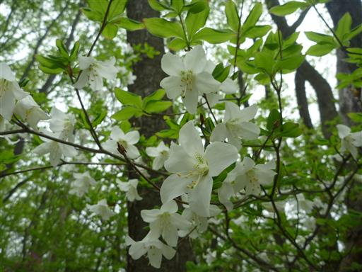
こちらはヤマツツジのつぼみ。
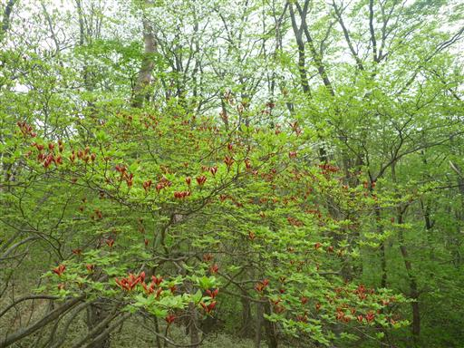
細尾峠に到着。ここから山に登る人が多いのか、たくさんの車が駐車している。
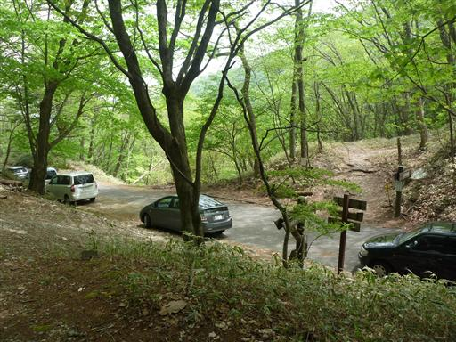
ここからもツツジの道は続く。
全体的にどんよりとしている空模様だったが、少し日が差してきた。
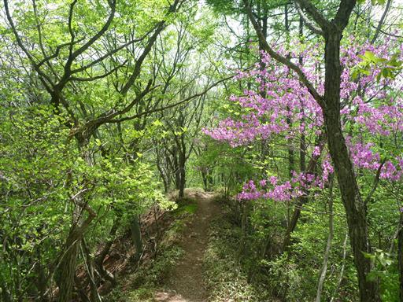
満開のミツバツツジ。鮮やかだ。
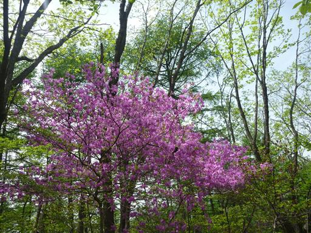
セミを発見。まだ生まれたばかりなのか、動こうとしない。
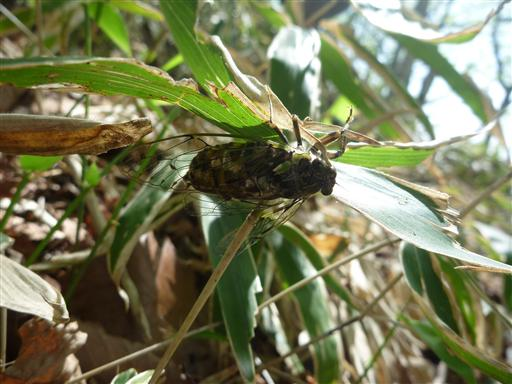
所々でセミの抜け殻も見かける。
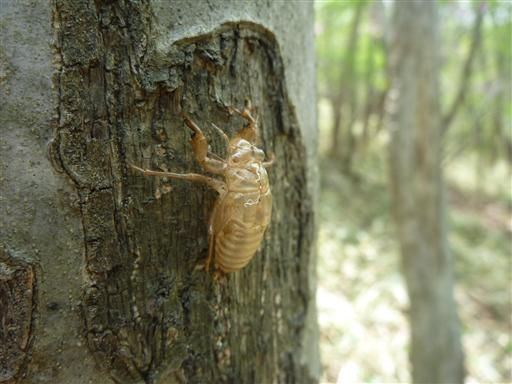
12:06 薬師岳山頂到着。標高1420m。
これまでアップダウンはいくらかあったが、
標高1373mの明智平展望台とほとんど変わらない標高だ。
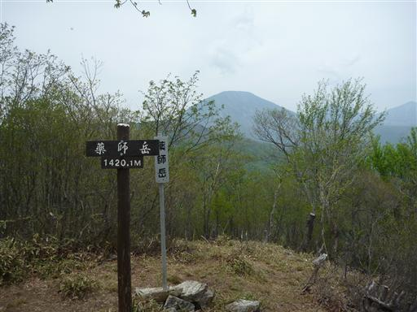
足元に不動明王像と石祠が祀られている。
ここは日光峰修行のコースだったところで、こういったものがたくさん見られる。
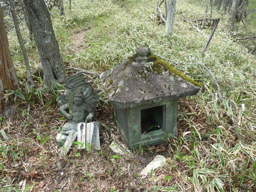
木には古い木札がたくさん貼り付けられている。
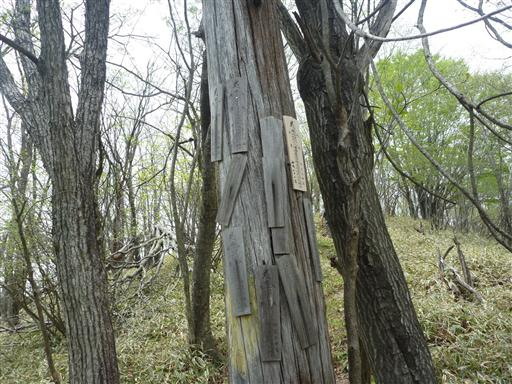
ここから先は細かなアップダウンが続く。この辺りは比較的よく踏まれている道だ。
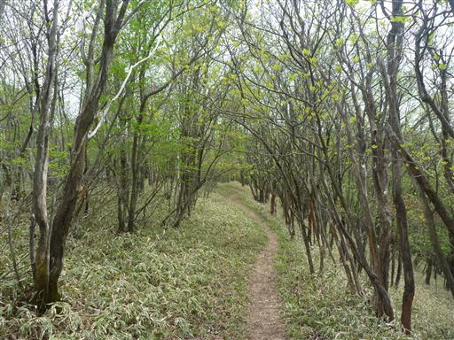
13:35 夕日岳山頂到着。標高1526m。
薬師岳に引き続き、お隣の夕日岳にも栃木百名山の標識がある。
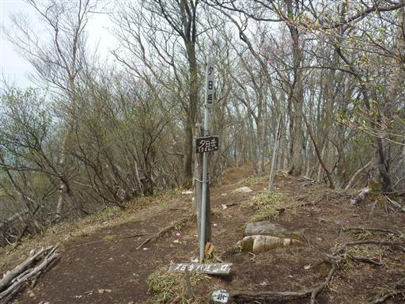
山頂からは北側の展望が開けている。男体山、大真名子山、女峰山が並んで見える。
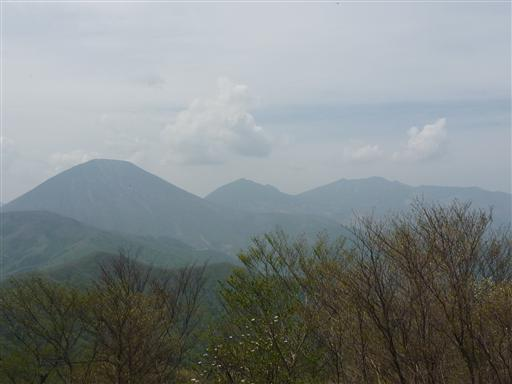
すぐお隣の地蔵岳を経由して下山する。
注意していないと気付かずに通過してしまいそうな小さなピークだ。
地蔵岳は栃木百名山の選からは漏れてしまったようだ。
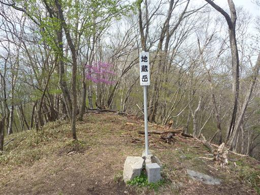
この山頂にも石祠が置かれている。
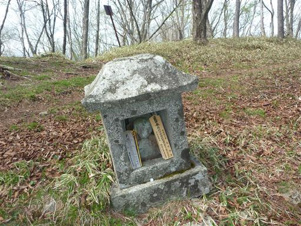
ハガタテ平に到着。縦走路はここから行者岳を経由して、
以前歩いた三枚石、横根山へと続いていく。
今回はここから古峰神社に下山する。
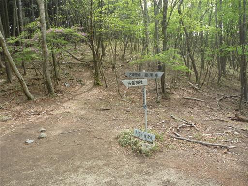
沢沿いの道を下っていくと、コンロンソウが白い花を咲かせている。
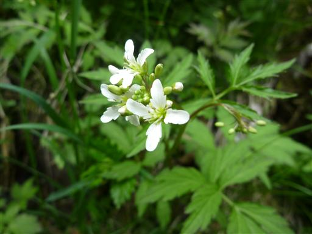
格好いい形の葉。何の葉かは分からない。
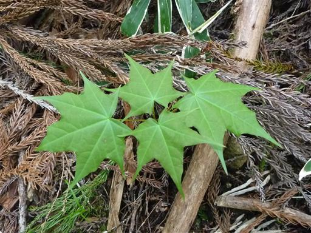
こちらのスミレも格好いい。おそらく最も普通に見かけるタチツボスミレだが、
花びらの形が変形していて違う花に見える。
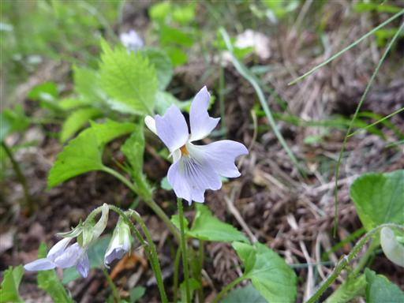
ツボスミレ。花のサイズは1センチ以下の最も小さいスミレだ。
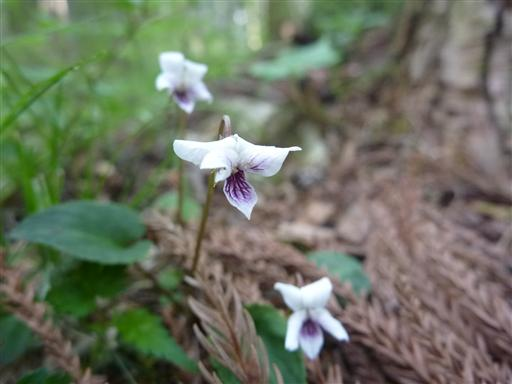
下山して林道に出てくる。林道歩きは40分程度だ。
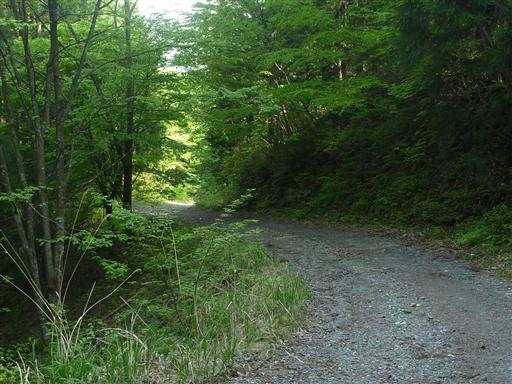
林道脇ではヤマツツジが満開だ。
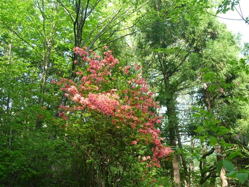
白い花を咲かせた木が立っている。遠すぎて何の木かは良く判別できないが、
非常に沢山の花を咲かせていて見事だ。
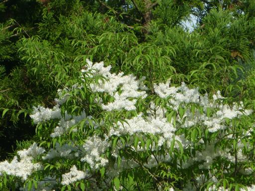
チゴユリ。小さくて可愛らしい花。
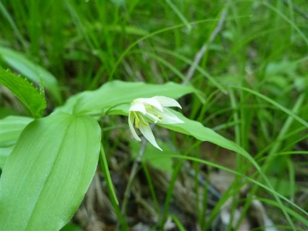
16:26 古峰原神社バス停到着。標高675m。
コースタイム通りに歩くと最終バスぎりぎりという少々リスキーな計画だったが、
バスの50分ほど前に無事下山。
時間が余ったので昨年に引き続き古峰神社を見学する。
ミツバツツジ、アカヤシオ、シロヤシオなどのツツジの花と
展望に恵まれた素晴らしいコースだった。
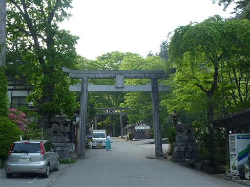